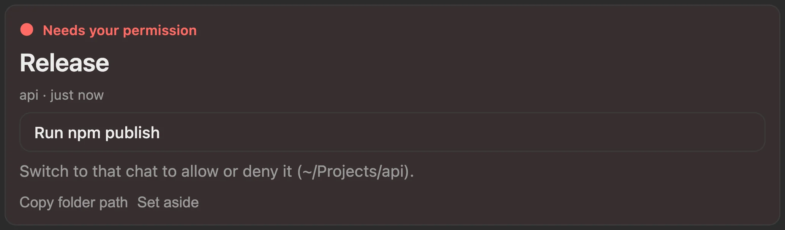
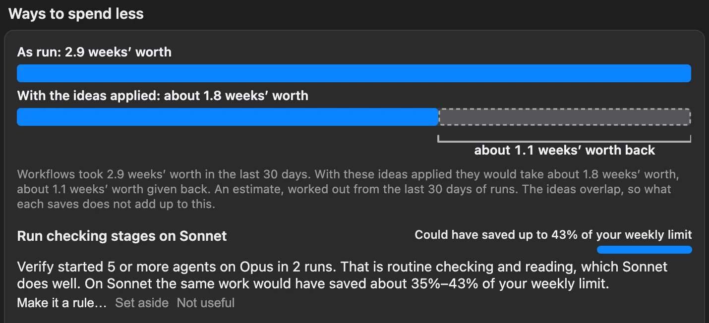
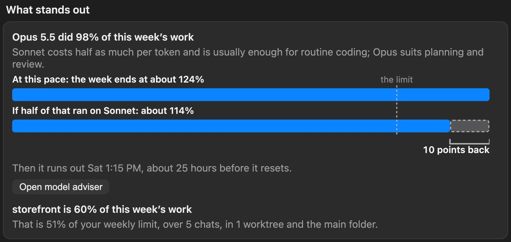

ToBeBestMe · a mod that runs inside Claude Code
It lives inside Claude Code. Know where things stand.
Not a separate app, service, website or account. ToBeBestMe changes Claude Code’s own interface: a pane beside the chat, a line above the prompt, a tool Claude answers from, alerts through Claude Code’s own channel. No server, no sign-up, no API key. It shows when your limits run out, every chat waiting on you across projects, what your workflows cost and your skills fixed, so you always know where things stand without leaving the chat.
- Limits run out on Saturday
- Chats wait unseen
- Workflows burn money
Paste it at a Claude Code prompt. Needs Claude Code 2.1.308 or later. Free, and it runs on your computer.
about 33 hours without Claude before it resets, Sun 2:00 PM.
Hover the drawing, or pressPress a day or a project.
Sample data, the same week the mod’s tests use. Shares of the weekly limit are estimates at list prices, worked out from Claude Code’s own records on your computer.
- 6tabs in one pane: Home, Workflows, This session, Usage, Skills, Settings
- Every tabhas each button pressed by Claude Code’s own mod test kit
- Every viewchecked in a browser at four widths, light and dark
- 4 tableslist everything it reads, runs, writes and sends
01Usage limits
See the wall before you hit it.
Every limit gets a forecast: where your pace lands by the reset, and when it runs out if that is early. The hours you would be without Claude are drawn as a hatched stretch. Scroll to ease off the pace, or drag it yourself.
At this pace it runs out Sat 5:21 AM, about 33 hours before it resets.

02Chats waiting on you
Every chat that needs you. One list.
Run five chats and one is always stuck on you. ToBeBestMe reads every project on this computer, including chats that never ran the mod, and puts the most urgent first as a card of its own.
- Needs your permission.A running chat stopped on a prompt. It leads the list as the top card and says which chat to switch to.
- Waiting for your answer.A question or a choice of options, with the reply buttons the chat offered. In the desktop app, answer without switching to it.
- Ready to carry on.A chat that stopped at a limit that has since reset. In a terminal, copy the resume command. Pull requests have their own labels, such as Review requested and Checks failing.


03Above the prompt
One line, always in view.
You do not have to open anything. The headline and its cost sit on one line in every chat, then context, the weekly limit, a model’s own weekly limit and what is running, each as a small runway whose ghost shows where your pace lands. A limit turns amber when it runs low and red when it is nearly gone.

04Workflows and spend
Know what a workflow will cost. Then spend less.
A workflow is a script Claude writes to split a big job across many agents. One run can start hundreds and go for hours. ToBeBestMe explains it before it starts, follows every agent while it runs, and afterwards draws the run as it was against the run with an idea applied.
Sample data. Savings are estimates, scaled from your last 30 days of runs. Two ideas for one stage overlap, so they do not add up.



05Skills
Claude can’t use a skill it can’t see.
Claude picks a skill from a listing of names and descriptions sent with every request. That listing has room for about 1% of the context window. Past it, skills go to Claude as a bare name it cannot match to what you ask. Claude Code reports this in /doctor and its debug log, not in the conversation. ToBeBestMe shows it beside the chat and fixes it in one place.
- Whether Claude can see your skills, and what ran in the last 14 days.
- A check-up of your own skills, with ways to make room.
- Fixes made in the pane, never in the chat. The setting as it is, as it will be, then Save change. A file you edited meanwhile is never written over.


06All of it, together
One pane beside the chat.
Type /tobebestme. Home leads with the week and the chat that needs you most, then what is running, what stands out, projects and open chats. Six tabs, keys 1 to 6 in the terminal. The same pane and line in the terminal and in the Claude desktop app.
- It reads every project on this computer, so nothing waits unseen.
- It uses a cheaper model when things get tight, and a model you choose yourself always wins.
- It writes a handoff note before most compactions, so the next prompt picks up where you were. Settings can turn it off.
- Every control works from the keyboard, with visible focus and labels for screen readers.

07Privacy
It stays on your computer.
Apart from what goes to Claude through your own account, and a notification address if you set one, nothing from your transcripts leaves your computer.
https:// address you set. A waiting chat’s title and a short excerpt are in it, and a public topic can be read by anyone who guesses its name, so use a long, random one. Notifications are off until you turn them on, except the alert when a chat waits for you, which is on by default and can be turned off.Reads
- Claude Code’s records in ~/.claude/projects: transcripts, workflow records, per-agent usage.
- Chat lists from
claude agents --jsonand the Claude app. - git status in the folders of recent chats.
- Your open pull requests from
gh pr list, only if the GitHub CLI is installed and signed in. - Your skill and command files, and from Claude Code’s settings only
skillOverridesandskillListingBudgetFraction.
Writes
.claude/tobebestme/handoff.mdin the project, with a.gitignoreof*beside it.~/.claude/tobebestme/reports/, for reports you save.- Claude Code’s store for mods, a JSON file of its own capped at 4 MiB, with short excerpts of prompts, recaps and questions so Home can show what waits. Turn off Read every project to forget them, or press Forget stored data… in Settings to clear it all.
- A skill’s description, a skill setting or a CLAUDE.md rule, only when you press Save change.
- A new skill, when you press Save skill or Save /long-run.
- Its own options, in Claude Code’s settings, when you change one.
- Only when you press a button and confirm: a reply to another chat, archiving a chat, stopping a workflow. Its full list is in SECURITY.md.
Never
- It never opens
.envfiles or key files. - Settings files can hold keys: they are parsed for the two skill settings above, and nothing else is shown or sent. A file is held in memory only while a setting fix waits for Save change or Cancel.
- Text from transcripts is treated as data: cleaned of control and invisible characters before it is shown, never run.
Check it yourself
Every release comes with the zip’s own SHA-256, SHA256SUMS for the files inside it (shasum -a 256 -c SHA256SUMS) and build provenance signed by GitHub, which you can check with gh attestation verify. The marketplace install copies the repository’s main branch as it is, so to run exactly one release, verify its download first; SECURITY.md has the commands. Version 1.5.0 has no provenance and is superseded. ToBeBestMe also checks its own files against its manifest once a day and says the result in Settings. Like any shipped code, it can be read and changed: these checks make tampering visible, they do not hide the code.
08The tour
The whole idea in 88 seconds.
The week, the forecast, the chat that needs you, the line above the prompt, savings and fixes, and how to install. With captions.
09Install
Running in a minute.
It installs for your user, so it runs in every project and every chat, in the terminal and in the desktop app.
- Claude Code 2.1.308 or later
- Claude Code signed in with a Pro or Max plan or an API key (ToBeBestMe itself needs no key)
- Nothing else to set up
Check your version
Run
claude updateif you are behind.Install the mod
Open it
Quit and reopen the Claude app, or start a new terminal session. Then type
/tobebestme. The first time, it reads the last 14 days of Claude Code’s records, once. That takes under a minute.
Questions
Is this made by Anthropic?
No. ToBeBestMe is an independent project. It is a Claude Code mod and runs inside Claude Code. It also reads Claude Code’s own records on your computer and runs a few commands, such as git and, if you use it, gh. SECURITY.md lists them all.
Which plans does it work with?
On a Claude plan it shows the weekly limit, and a model’s own weekly limit where there is one. On an API key or team billing it shows what each request costs. Context size shows for everyone.
Does it cost anything?
No. It is free and MIT licensed. The few buttons that send text to a model (Suggest more, Improve it, Fix description… and drafting a skill) run through your own Claude Code account.
Does it send my transcripts anywhere?
Apart from what goes to Claude through your own account, nothing from your transcripts leaves your computer. The ways text from your chats can travel are a prompt you trigger, a handoff note Claude writes before a compaction, what Claude asks the status tool for (its overview gives counts; the titles and short excerpts of the chats waiting on you come only after Claude Code asks you, unless you have allowed the tool yourself), and, if you set an https:// address, a notification’s title and text.
Does it change my files or settings?
It edits a skill’s description, a skill setting or a rule in your CLAUDE.md only when you press Save change, on a preview that shows what is there now and what it becomes. It also saves a skill when you press Save skill or Save /long-run, and writes its own options to Claude Code’s settings when you change one. Otherwise it writes only its own store, the reports you save, and a handoff note in the project.
Where do the forecasts come from?
From the limits Claude Code reports and how fast you have been using them. A limit’s pace is its own average: use so far over the time the week has run. The mod labels an estimate wherever it shows one.
Does it see chats on other computers?
No. Home covers this computer only. Chats on other computers or in the cloud are not included.
Know where things stand without leaving the chat.
A mod inside Claude Code: limits, waiting chats, workflow costs and skills, beside the chat. One line to install.